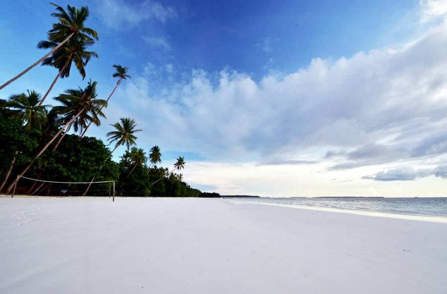
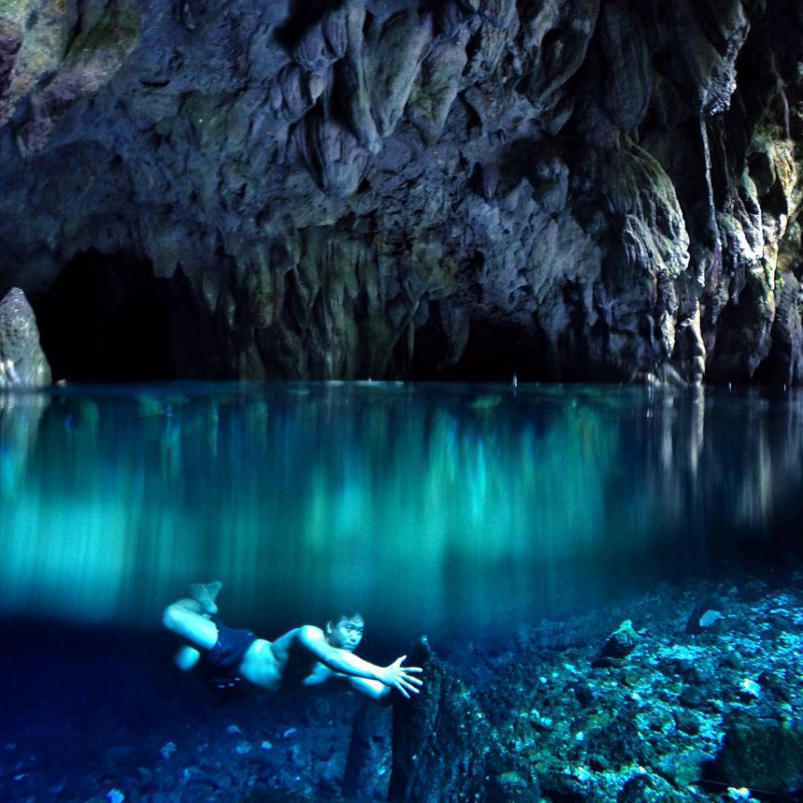

Tentang Kepulauan Kei
Kepulauan Kei adalah gugusan pulau di kawasan tenggara
Kepulauan Maluku yang termasuk Provinsi Maluku, Indonesia.
Kepulauan Kei memiliki keindahan alam, pantai, laut,
serta kehidupan masyarakat yang erat dengan lingkungan pesisir.
Destinasi Wisata
Unggulan
Pantai Ngurbloat

Pantai Ngurbloat terletak di Desa Ngilngof, Kabupaten
Maluku Tenggara. Pantai ini dikenal dengan pasirnya
yang sangat halus dan pemandangan lautnya.
Goa Hawang

Goa Hawang atau Lian Hawang terletak di Desa Letvuan.
Goa ini memiliki kolam air alami yang jernih dan
berwarna biru kehijauan.
Keindahan Laut Kei
Perairan Kepulauan Kei memiliki keindahan laut dan
lingkungan pesisir yang menjadi bagian penting dari
kehidupan masyarakat setempat.
Sejarah dan Masyarakat
Kepulauan Rempah-rempah
Kepulauan Maluku sejak dahulu dikenal sebagai kawasan
rempah-rempah yang menghasilkan pala, fuli, dan cengkeh.
Kehidupan Masyarakat
Kehidupan masyarakat Kei memiliki hubungan erat dengan
lingkungan laut dan pesisir sebagai bagian dari kehidupan
masyarakat kepulauan.
Kirim Pesan
Kolom bertanda * wajib diisi.